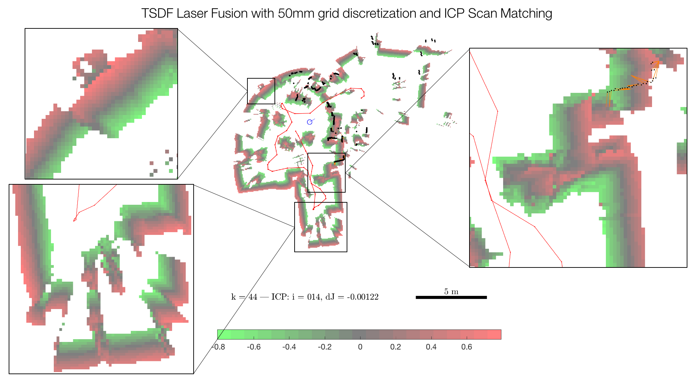

Nov 13: Set up the main function, implement the measurement() and TSDF updateReconstruction() functions (see KinectFusion paper)
Nov 20: Implement predictSurface() - TSDF raycasting for surface prediction
Nov 27: Implement estimatePose() from robot odometry model
Dec 11: Finalize LaserFusion evaluation and write-up
Progress and Updates
Dec 11, 2016
Q.C. Modified isocontour function using marching squares to get the outline of the refined floor map.
Dec 11, 2016
Q.C. Added refinement function to refine TSDF by removing holes due to imcomplete fusion. Added smoothness function to remove noises and small isolated regions.
Dec 9, 2016
Q.C. added some changes to fminunc function in order to achieve faster converge speed. Final state at each frame and iterations are recorded.
Dec 7, 2016

Dec 2, 2016
P.O. Added pose estimation based on ICP with a random error generated in the ground truth at each measurement. The video shows the ICP iterations and map reconstruction for 47 sampled scans. Green represents a positive SDF value and red represents a negative SDF value. The zero crossing is gray. Yellow lines are distances use to compute the cost function for the pose optimization step of ICP. Note that a scan matching failure occurs at k = 43, and subsequently onward.
Nov 23, 2016
P.O. Updated the TSDF-based reconstruction in updateReconstruction() to incorporate raycasting for a dataset with absolute ground truth at (MIT CSAIL). The video below shows the TSDF update for 100 sampled scans using absolute ground truth robot pose. Green represents a positive SDF value and red represents a negative SDF value. The zero crossing is gray.
Nov 22, 2016
P.O., Q.C., T.Y. Debugged and finished implementation of TSDF for the run (updateReconstruction)
Nov 8, 2016
Q.C. Compute TSDF for each given point
Nov 7, 2016
P.O. Parsed the Intel-01 Laser Scan and pioneer odometry dataset (see video of raw data)
P.O. Commited a MATLAB main routine, plotting function and the measurement() function for computing bilaterally-filtered scan data vertices and normals